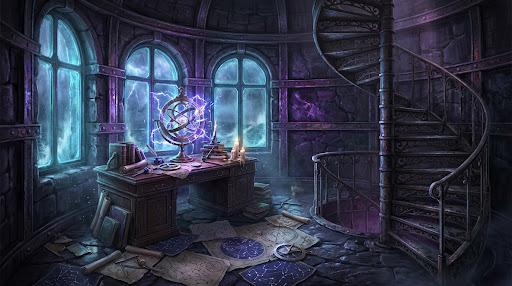

You push through the heavy iron door and ascend the spiral steps, your boots ringing against the grated metal as wind howls through hair-thin fractures in the quartz walls. Halfway up the spire, the staircase opens into the Whispering Gallery, the keeper's circular study. Charts of constellations that no longer exist flutter across the floor, pinned down by shattered spyglasses and salt-crusted brass weights. On the oak desk in the center of the room lies Vane's leather logbook, flipped open to its final entry: The storm is not weather; it is a lock, and the lighthouse is the key. If the Great Prism above is not tuned before high tide, the glass will shatter and pull the sky into the sea. Beside the book sits a brass astrolabe, its concentric rings spinning on their own and humming with blue static electricity. Above you, a heavy trapdoor leading to the summit lantern room slams open and shut in the gale. Across the room, behind a torn velvet tapestry, a narrow service dumbwaiter hangs by a braided steel cable over a pitch-black vertical shaft that smells of ozone and warm subterranean stone.
